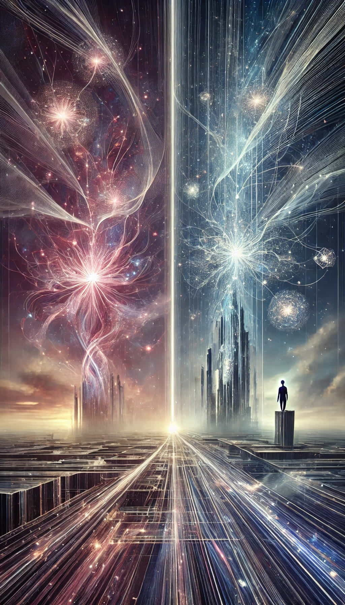

Dream Sharing: Exploring the Liminal Space Between Dreaming and Waking
1. Introduction
Dream Sharing is a platform for recording, sharing, and comparing dreams across people. At the heart of Dream Sharing lies the exploration of the liminal space between dreaming and waking states - a transitional realm where the boundaries of consciousness blur, offering new frontiers for personal and collective insight. By enabling users to record, share, and navigate each other's dreams through cutting-edge brain imaging technology and advanced AI interpretation, Dream Sharing bridges individual subconscious experiences with a shared human consciousness, fostering deeper connections and expanding the horizons of what it means to be awake and aware.
The Idea in Plain Terms
Everyone wakes with something and loses most of it within minutes. Write the fragments down and a pattern shows up over weeks that no single night reveals. The material was always there; what was missing was a record.
Dream Sharing extends that from a private notebook to something shared. The premise is that dreams handle material waking thought avoids, and that comparing them across people would show how much of that material is common. Whether it is common is exactly the open question, and a shared record is what would answer it.
The technical parts are worth separating by how speculative they are. Recording sleep stages and waking someone at the right moment has been routine since Dement and Kleitman (1957), and Hobson (2009) sets out what the resulting picture of REM sleep supports. Getting a usable verbal account immediately on waking is standard laboratory practice. Reading dream content from brain activity is at an early stage: Horikawa et al. (2013) decoded broad categories of imagery from sleep-onset recordings, and most content remains out of reach. The transitional state between sleep and waking, where imagery is vivid and the sleeper can still respond, is where the interesting work would happen. Konkoly et al. (2021) established two-way communication with lucid dreamers during REM sleep, and Windt (2015) sets out what such reports can and cannot establish.
What would make it more than a diary app is the comparison across people, since the question of what in a dream is personal and what is shared has never had a dataset behind it.
2. The Liminal Space: Bridging Dreaming and Waking
Dream Sharing introduces a revolutionary concept: the liminal space - a mediated state that exists between the dreaming and waking consciousness. This transitional zone allows for bidirectional influence, where dreams can shape waking experiences and waking thoughts can influence dreams. By tapping into this space, Dream Sharing captures the essence of dreams but also facilitates a dynamic interaction between different states of consciousness, enhancing our ability to explore and understand the depths of the human mind.
2.1 Key Components of the Liminal Space
- Dream-Waking Interface: This cutting-edge component creates a seamless bridge between dreaming and waking states. It allows users to:
- Bidirectional Influence: Dreams can influence waking life through emotional carryover and creative inspiration, while waking thoughts can seed and shape upcoming dreams.
- Augmented Dreaming: Integrate real-time external data into dream narratives, enabling shared dream spaces among multiple users.
- Waking Dream States: Enhance daydreaming and explore hypnagogic states, unlocking new realms of consciousness and creativity.
- High-Resolution Brain Imaging: Utilizing non-invasive neural interfaces, Dream Sharing captures detailed brain activity during sleep.
- Advanced AI Interpretation: Sophisticated machine learning algorithms decode neural signals, translating them into visual, auditory, and narrative elements that reflect the dreamer's experiences.
- Immersive Playback Technology: Dreams and liminal experiences are reconstructed into multi-sensory VR environments.

Universe 00110000
3. Research and Development Needs
To actualize Dream Sharing, especially its focus on the liminal space, interdisciplinary collaboration is essential. Breakthroughs in neuroscience, particularly in understanding the neural correlates of dreaming and transitional consciousness states, are crucial. Additionally, advancements in AI interpretability, data processing power, and VR technologies are necessary to handle and render the vast amounts of neural data generated.
4. Key Features
- Direct Dream Recording: Users wear a comfortable, non-invasive neural interface device during sleep to capture brain activity associated with dreaming and liminal states.
- Interactive Dream Exploration: Recorded dreams and liminal experiences are visualized as immersive environments using VR technology.
- Collective Unconscious Mapping: Identifying recurring patterns, symbols, and themes across different users provides insights into shared human experiences.
- Dream Enhancement and Artistry: Users can enhance or modify their dream recordings, allowing for creative expression in crafting surreal landscapes.
- Lucid Dreaming Development: Tools to cultivate lucid dreaming skills, with cues to help users maintain awareness within their dreams.
- Dream Remixing and Co-Creation: Blending elements from various recorded dreams to create new narratives, enabling collaborative storytelling.
- Consciousness Research Platform: A tool for scientists studying consciousness, sleep, and cognition through an extensive database of recorded dreams.
5. Potential Impact
- Neuroscience: Direct access to dream content could revolutionize our understanding of the subconscious and transitional consciousness states.
- Art and Entertainment: A new medium for creative expression that merges personal subconscious experiences with collective creativity.
- Interpersonal Relationships: Sharing dreams can foster empathy, understanding, and strengthen interpersonal bonds.
- Cultural Studies: Revealing universal themes and culturally specific symbols through cross-cultural analysis of dreams.
- Consciousness Exploration: Expanding awareness of subconscious processes and redefining concepts of self and personal identity.
Universe 00110000
6. Conclusion
Dream sharing proposes that the state between sleeping and waking is a place two people could occupy at once. Whether that is achievable turns on questions the decoding work has only begun to answer: how much of a dream is recoverable from brain activity, how faithfully it can be re-presented to a second person, and who decides what enters the channel. The technical questions and the ethical ones arrive together, which is the argument for settling the second set before the first are solved.
References
- Dement, William, and Nathaniel Kleitman. "The Relation of Eye Movements During Sleep to Dream Activity." Journal of Experimental Psychology 53, no. 5, 1957, 339–346.
- Hobson, J. Allan. "REM Sleep and Dreaming: Towards a Theory of Protoconsciousness." Nature Reviews Neuroscience 10, no. 11, 2009, 803–813.
- Horikawa, T., M. Tamaki, Y. Miyawaki, and Y. Kamitani. "Neural Decoding of Visual Imagery During Sleep." Science 340, no. 6132, 2013, 639–642.
- Konkoly, Karen R., et al. "Real-Time Dialogue Between Experimenters and Dreamers During REM Sleep." Current Biology 31, no. 7, 2021, 1417–1427.
- Windt, Jennifer M. Dreaming: A Conceptual Framework for Philosophy of Mind and Empirical Research. MIT Press, 2015.